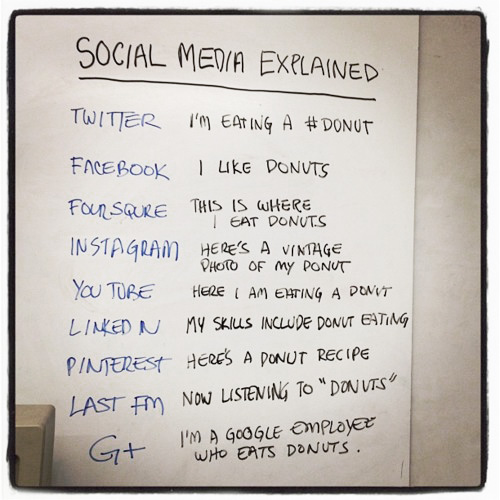

How Pinterest Is Changing Website Design Forever
Sarah Kessler, mashable.comEven if you haven’t ever visited popular visual bookmarking site Pinterest, you might recognize its design elements — which have been popping up everywhere since the startup burst onto the mainstream scene in 2011.
The site doesn…

by Roeselien Raimond
tioga.

Hands on with Crumpler Boston Heist and Dry Red No 5
February 7, 2012 By Kelly Montgomery, digitaltrends.comWe took a hands-on look at Crumpler’s Dry Red No 5 backpack as well as the spacious Boston Heist shoulder bag. We’ve got the rundown on what we liked, what we didn’t, and whether they’re a good buy.
We knew from last year that our…
http://www.macstories.net/wp-content/uploads/2012/02/Screen-Shot-2012-02-07-at-4.50.07-PM.png
 Those who have been Mac users long enough to remember the good old lampshade iMac and happen to have made the transition to newer, slicker aluminum models from the past few years might want to take a look at Twelve South’s latest product, the HoverBar. Meant to be used on an iMac-powered desk and available today at $79.99, the HoverBar is a flexible L-shaped arm that connects your iMac to an iPad; you’ll be able to turn your tablet into a secondary screen with iOS apps that support Lion’s multiple displays, a touch-based dashboard for your Twitter feed or RSS, or just about anything else you can come up with thanks to the plethora of apps available on the App Store.
Those who have been Mac users long enough to remember the good old lampshade iMac and happen to have made the transition to newer, slicker aluminum models from the past few years might want to take a look at Twelve South’s latest product, the HoverBar. Meant to be used on an iMac-powered desk and available today at $79.99, the HoverBar is a flexible L-shaped arm that connects your iMac to an iPad; you’ll be able to turn your tablet into a secondary screen with iOS apps that support Lion’s multiple displays, a touch-based dashboard for your Twitter feed or RSS, or just about anything else you can come up with thanks to the plethora of apps available on the App Store.
HoverBar can be used with an iPad 2, iMac, or an Apple external display, and Twelve South says it can also be installed independently as, for instance, a kitchen mount. Obviously, the silicone lined clamp of HoverBar will work best when directly attached to an iMac, as it seems like Twelve South really wanted to place this product as a desktop Mac companion to achieve an iOS/OS X workstation worth of Apple’s design polish.
HoverBar turns iPad into the ultimate sidecar for an iMac or Apple display, presenting more ways to use iPad more often. Connect HoverBar to your Mac, snap iPad 2 into the secure clip and you now have one powerful dual-computer work setup. Having iPad floating next to your Mac allows you to monitor your Twitter stream, stocks and local weather — or run FaceTime on your iPad while you email, edit a file, or cut a video on your Mac. There is no reason to leave iPad in your computer bag when you have a HoverBar. This accessory expands the way you use and interact with iPad 2.
The HoverBar’s flexible arm allows you to place the iPad both in portrait and landscape orientation, and whilst some might argue that reaching out with your arm to touch an iPad can be uncomfortable over time, I actually believe there is a market for iOS desktop accessories that enable you to enjoy the rich selection of iPad apps when using a Mac at your desk. Plus, Twelve South’s promo video (which we have embedded after the break), shows some interesting additional usage scenarios for the HoverBar, such as attaching it to a desk and use it with AirPlay Mirroring to an Apple TV, or mounted on a bed for hands-free reading. I look forward to getting one of these things and see if it’ll turn out to be weird, or incredibly useful. Either way, it’s a very interesting product decision from Twelve South.
Via ( MacStories )

Canon overhauls 24-70mm lens, stabilizes 24mm and 28mm primes
Stephen Shankland, cnet.comCanon’s EF 24-70mm f/2.8L II USM lens will cost about $2,300.
(Credit: Canon USA)
To IS or not to IS?
That is the question Canon faced when deciding whether to put image stabilization in a trio of new lenses it announced today.…
SocialFlow Opens The Floodgates
Erick Schonfeld, techcrunch.comBrands love marketing across social media, but it is a little like TV advertising in that it is hard to measure how effective it is. Sure, you can count retweets, likes, and Klout scores, but how does that translate into real engagement w…
Zero gravity roller coaster will give you eight seconds of weightlessness
By Adi Robertson, theverge.comRight now, the only way to experience the sensation of complete weightlessness is by becoming an astronaut or booking a trip on a reduced-gravity plane like the “Vomit Comet.” But that may be about to change. Design team BRC Imaginati…

Bourbon Barrel Foods
Julie Wolfson, coolhunting.comRepurposed casks add distinctive notes to small-batch sauces and spices
Based in Louisville, Kentucky, the city known as the gateway to bourbon country, Matt Jamie has found a new way to repurpose barrels that have been used to a…
http://gearpatrol.com/blog/wp-content/uploads/2012/02/Parrot-ZIK-Gear-Patrol.jpg

Headphones are the new status symbol in a world where everyone owns the exact same phone. So it’s not surprising that Parrot, maker of a wide range of random accessories for mobile devices including a remote controlled helicopter drone and the Asteroid car audio receiver, decided to enter the fray. Like the $1,500 Zikmu iPod speakers launched a few years back, their newly announced Zik headphones were designed by the guru of all things modern, Philippe Starck. While they aren’t the first set of cans to make use of Bluetooth connectivity to eliminate wires, a unique button-less design should help them stand out in the first class cabin, partially because of their sleek black exterior, but more likely because of the strange ear cup fondling their wearers will surely engage in.
Specifically, swiping up or down along the back of the right ear cup adjusts volume. Skipping tracks likewise works by swiping back and forth to the left or right. The audio will even auto pause each time it detects a user taking off the headset. Most phones will still have to “pair” with the headphones to work, but newer handsets equipped with Near Field Communication (NFC) such as the Galaxy Nexus can automatically sync by just tapping one of the ear cups to the phone. Noise cancellation technology rounds it all out, muting consistent background distractions both inside and outside the headset, so you can listen to Toni Braxton or take calls from grandma in auditory peace. Of course, there’s an app as well, which provides a wide-array of soundstage controls for discriminating listeners who can’t help but tweak settings. Ready to spring? Pricing and release dates are still under lock and key, so you’ll have to monitor the link below for news.
Via ( Gear Patrol )
http://farm8.staticflickr.com/7161/6830359809_72d0a162a2_o.jpg
My previous Photoshop tutorial on using noise for subtle texture was well received, so I’ve decided to write more. This time, we’re creating an etched effect (in this case, for text on a metallic background, but it’ll work for any background and is equally applicable to icons and other shapes, as well as text).
It’s exceptionally easy to create an etched effect, since we only need to replicate two aspects of how shapes look in the real world when they’re cut into a surface:
To start, create a new document and fill it with a suitable background. I chose a simple gradient layer with a grey gradient, to give a basically metallic appearance. I then added some text, and made it a bit darker than the darkest colour used in the gradient.

Some text, with a gradient in the background.
We only need to apply two effects to create the etched effect; one for each of the visual factors I mentioned previously. First, we create the interior shadow using the Inner Shadow layer effect.

Inner Shadow settings.
You can tweak the settings to adjust the apparent visual depth of the etching, but I find that a Distance of 2 pixels and a Size of 4 pixels works well for a believable effect. Make sure you set the light angle to 90 degrees if you’re designing for iOS, or whatever global light angle your particular target platform simulates.
Next, we need to replicate the effect of light spilling a little way into the carved-out shapes. Interestingly, we can do this by making unconventional use of the Drop Shadow layer effect.

Drop Shadow settings.
By changing the shadow to pure white, with a Normal blending mode, and making it only 1 pixel in Size and 1 pixel in Distance from the layer’s contents, we can create the impression of some light reflecting along the bottom edge of whatever is in the layer (the text, in our case).
Both those styles put together create a pretty decent etched effect for the text, as shown below.

The final etched effect.
The same Layer Style can be copied and pasted onto any other shape or icon you like - it’s great for titlebars and similar interfaces. You can download the finished etched effect as a zipped PSD here.
If you’re interested in more beginners’ UI effects tutorials for Photoshop, follow me on Twitter and let me know.
Via ( Matt Gemmell )

This is actually a pretty great way to jump start your HTML5 web development project by combining 3 great platforms.
(via Initializr - Start an HTML5 Boilerplate project in 15 seconds!)
The Interview: Aneesh Chopra
Nancy Scola, theatlantic.comThe outgoing chief technology officer of the United States talks SOPA, open government, and MacGyvering an innovations policy for the country.
When the president needs advice on technology policy, he calls on Aneesh Chopra. As the first…

Mad Catz Cyborg M.M.O. 7 gaming mouse hands-on
Sean Buckley, engadget.comMad Catz’ Cyborg RAT series of adjustable computer mice has seen its fair share of minor revisions, and while wireless upgrades and whitewashed DPI tweaks have given consumers a hair of choice in transforming desktop pests, the differen…

We’re in the 4th quarter. New England up 17-15. Here. We. Go.
(Photo by Jamie Squire/Getty Images)

Almost there.

Social Media Explained (with donuts)
Tumblr: FUCKYEAHDONUTS (?)
Do You Realize - The Flaming Lips (by passionaddictvideo)
Twelve reasons to be jealous of Leonardo DiCaprio.
Insane video from OK Go. It probably took forever to create it.
(by ►i.Anton)


2 feet of snow.

Sky diver to break sound barrier with jump from edge of space
By Richard Gray, Science Correspondent, telegraph.co.ukA skydiver is set to become the first person to break the sound barrier during a free fall by leaping from a balloon on the edge of space later this year.
It is the ultimate in parachute jumps: from the edge of space, Felix Baumgartner will…
Cosmonaut Couture: Russian Photo Shoot Makes Space Sexy
By Dave Mosher, wired.com

Spectacular High-Res Image of Earth: The Other Side
By Wired UK, wired.comLast week, NASA released its 2012 version of the famous “Blue Marble” image. By using a planet-pointing satellite, Suomi NPP, the space agency created an extremely high-resolution photograph of our watery world.
The photo centered on th…
White Flower in the http://pinterest.com/pin/14636767508799482/
Porsche Design Shish http://pinterest.com/pin/14636767508799479/

Looking for a zoom booster to flesh out your NEX or MFT kit? Then take a highly magnified gander at Kenko Tokina’s 400mm f/8 mirror lens, which now comes with both E- and T-mounts to complement the manufacturer’s existing SLR-compatible range. So long as you don’t mind the light-sapping aperture and manual focus, you’ll be able pick one up in Japan tomorrow for a price that should soon become apparent. Just bear in mind that other new MFT options from Tamron and Astrodesign are likely on their way too.
Via ( Engadget )

Rupert Murdoch’s surprising Twitter success
Adi Robertson, theverge.comMedia tycoon Rupert Murdoch isn’t particularly computer-savvy, but his forays into Twitter have so far managed to capture the candid, combative outbursts that characterize good microblogging. On his account, he’s done everything…
Study: 91% of Gen-Ys Use Their Phones in the Bathroom
Alicia Eler, readwriteweb.comSome people won’t go anywhere without their smartphones. Not even the pot.
A new study from 11mark surveyed 1,000 Americans about their smartphone usage, and found that a whopping 75% of American smartphone owners have used their…
This is just plain sick. I mean come on people, your phone is probably full of germs now.
Matt Gemmell recently wrote about how to create a Subtle UI texture in Photoshop, and I thought it would be worth showing how to do the same thing in Acorn.
First, I’m going refer you to the Making a Custom Web Button tutorial we put up a while ago. You can skip the step about making the text, and you’ll end up with an image that looks like this:
If you’re lazy and don’t want to go through the steps, you can download that file here: ButtonWithoutTexture.acorn. The button shape is made out of vectors which is nice and handy if you want to resize it for later on.
If you zoom in on the button, you’ll notice that there’s we’ve got no texture on the button:
So your goal is to add texture to this button, but without impacting the border or highlight shapes.

Gov. Nick Schonberger told me this is the best thing he’s seen all day when I shared this one with him. It is about the best way to end of a week, I say.
This dog lounger from Vurv Design (Canada, represent) is a curve plywood gem, veneered in walnut and ready set fo your dog to literally lap in luxury. The circular three-quarter form by itself is a work of beauty which as a standalone works. Turning that design into a functional crawl space for your dog or cat just make it more interested, though I can already tell my Chere would need a bit more cush to relax in there. The best part? $598 with free shipping inside the USA or Canada. Made in Canada, yes.
If you were not a bit jealous of your dog’s lax life beforehand, you may now.
Via ( Selectism.com )
No More Angling for the Best Seat; More Meetings Are Stand-Up Jobs
By RACHEL EMMA SILVERMAN, wsj.comAtomic Object, a Grand Rapids, Mich., software-development firm, holds company meetings first thing in the morning.
Employees follow strict rules: Attendance is mandatory, nonwork chitchat is kept to a minimum and, above all, every…

Apple Makes 75% of Mobile Phone Profits, With Only 9% of the Phones
Derek Thompson, theatlantic.comApple’s share of the global market in mobile phones — not just smart phones, but all mobile phones — has expanded from 3 percent in 2010 to just under 9 percent today. That doesn’t quite sound like the dominance you’d expect from the worl…
This is interesting. Tumblr just rolled out a new feature that allows a blogger to spend $1 to make their post stand out to their followers on the dashboard by adding a “OMG Look” tag next to it.
This is interesting. I like the idea of it, but not the actual implementation.
Create iOS reminders using Alfred for the Mac. It syncs to your Phone making it really easy to set reminders.
[Download it here](http://www.dirtdon.com/?p=1261)
Facebook’s Shameful Billionaire Boys Club
Rebecca Greenfield, theatlanticwire.comThe high profile soon-to-be IPO-ed company has zero excuse for not having a single woman on its board. It’s almost cliché to call a tech company shameful for having a male dominated work forces. Then again, it’s the truth. But, the soc…
If you’re ever in Dallas with a need for office equipment, you can go here.
bizstone, instagr.am
Turn Any USB Memory Stick Into An Ultra-Secure, Password Protected Filestore
Keir Thomas, cultofmac.comIt’s time for me to sign off my tipster post here at Cult of Mac. For my final tip here’s one of my absolute favorite tips from my book. It describes how to turn any USB memory stick or storage device into an ultra-secure filestore. Wh…

Facebook’s Incredible Growth Story In Charts
Dan Frommer, readwriteweb.comFacebook’s IPO filing, released this week, is fascinating for many reasons: We’ve already covered several angles.
Perhaps the most exciting, though, is the wealth of data about the company that is finally public - from its user…

We are all living inside the notification hell
By Om Malik, gigaom.comEmails, tweets, notifications, text and instant messages, Facebook status updates, Path moments — all these are new tools of communication when taken together are notification hell. These notifications prey on human desire for a…
Damn You Autocorrect Founder Picks 13 Funniest Texts Ever
Samantha Murphy, mashable.com1.
Intended word: “Googled,” not “fondled.”
Click here to view this gallery.
In December, millions of readers laughed along with Damn You Autocorrect’s funniest entries of the year, based on Facebook shares, tweets, comments…

Dropbox offers up to 5GB of free space to anyone willing to go beta
Amar Toor, engadget.comHere’s some good news for all you Dropboxers out there: the company is offering a bundle of free storage space to anyone who tries the beta version of its new Experimental software. It’s really quite simple: just download the test…
Mount Amazon S3, Google Cloud Storage or Eucalyptus as a local filesystem. (Support for Dropbox and Rackspace Cloud Files is planned, too.)
Graffiti artist to become multi-millionaire thanks to Facebook bet in 2005
February 2, 2012 By Trevor Mogg, digitaltrends.comArtist David Choe painted some murals in Facebook’s offices back in 2005. When asked about how he’d like to be paid for his work, he had a 50/50 choice. His decision looks set to make him a multi-millionaire.
Imagine it’s 2005. You’re…
Why Context Is King in the Future of Digital Marketing
Jonathan Gardner, mashable.comJonathan Gardner is director of communications at ad company Vibrant Media. He has spent his career as an innovator at the nexus of media and technology, having worked in communications leadership roles and as a journalist…
Interview: David Karp, Founder of Tumblr, on Realising His Dream


The Original LEGO Patent

Qualcomm drives augmented reality forward: an exclusive look at Vuforia
During his recent trip to Qualcomm, Joshua Topolsky got an up-close look at Vuforia, the company’s new augmented reality smartphone platform. CEO and chairman Dr. Paul E. Jacobs described it as the latest in a long line of technology platforms that Qualcomm has developed for others to build on top of.

This is my cat Coco.
http://www.macstories.net/wp-content/uploads/2012/02/Screen-Shot-2012-02-02-at-9.47.52-PM.png
 A few weeks ago, I tweeted I’d like to see some sort of Twitter client with its only focus being on Favorites — I keep Twitter open all day, and I save a lot of links. Prior to ending up in my Evernote or Pinboard accounts, the tweets I want to “save for later” are marked as favorites, which, I believe, provide an easy way to use a built-in Twitter functionality for general-purpose “bookmarks” that I may or may not consider for a post or more serious bookmarking in a second service. As you can see, I have a lot of favorites. The same is true for other services I use on a daily basis, such as Google Reader, Vimeo, YouTube, or Instagram: I like to be able to “star”, “like” and mark things as favorite so a) the service knows the stuff I’m interested in and perhaps will leverage this data sometimes in the future or b) perhaps other apps will. And while I’m still waiting for the ultimate app that looks at your Internet favorites and delivers content intelligently to you every day (albeit Zite is on the right path), it turns out someone has built a functional and nice-looking desktop aggregator called Favs.
A few weeks ago, I tweeted I’d like to see some sort of Twitter client with its only focus being on Favorites — I keep Twitter open all day, and I save a lot of links. Prior to ending up in my Evernote or Pinboard accounts, the tweets I want to “save for later” are marked as favorites, which, I believe, provide an easy way to use a built-in Twitter functionality for general-purpose “bookmarks” that I may or may not consider for a post or more serious bookmarking in a second service. As you can see, I have a lot of favorites. The same is true for other services I use on a daily basis, such as Google Reader, Vimeo, YouTube, or Instagram: I like to be able to “star”, “like” and mark things as favorite so a) the service knows the stuff I’m interested in and perhaps will leverage this data sometimes in the future or b) perhaps other apps will. And while I’m still waiting for the ultimate app that looks at your Internet favorites and delivers content intelligently to you every day (albeit Zite is on the right path), it turns out someone has built a functional and nice-looking desktop aggregator called Favs.
Favs for Mac is in beta, so don’t expect a full review now — the developers are still polishing the interface and adding features, and it wouldn’t make sense to give a final verdict whilst the app is still being worked on. But the underlying concept is there, and it’s one of those things I’ve been looking for: a single app that collects favorites from a variety of services.
Currently, Favs lets you fetch favorite items from:
The list is pretty impressive already, and I assume it can only grow before the final release. I don’t know what else I’d add to that list (multiple accounts are already supported) as most of the services I use are already covered — perhaps some kind of Evernote and Instapaper integration, though I honestly can’t imagine how Evernote could work with Favs. Right now, I’m just happy Favs is shipping with a solid selection of services, and I like how the developers also implemented a unified inbox for all your favorites.
 Favs, in fact, uses the old Tweetie-like interface with narrow sidebar + right panels (the one we’ve already seen in a multitude of Mac apps such as Sparrow and Reeder) to lay out service icons, unified inbox, and controls to manage settings and refresh all services. The app supports Lion’s full-screen mode, which is probably a good choice considering you’ll want to run Favs as a standalone app that is not your main Twitter or Google Reader client, as it’s focused on letting you view items that you wanted to save for later. Obviously one could easily dismiss this interface approach as “easy” or not innovative, but I believe this design can work for an application like Favs where you’re supposed to quickly switch between sections (sidebar), take a peek at headlines (mid panel) and read the actual content (right panel). As I’ve said this is a first public beta, which means features like keyboard navigation, sharing and contextual menus haven’t been implemented or refined yet. I was able to test Favs with my huge collection of Twitter favorites and it reliably loaded items from 500+ days ago without a single slowdown. I can only imagine things will get even better come the final release.
Favs, in fact, uses the old Tweetie-like interface with narrow sidebar + right panels (the one we’ve already seen in a multitude of Mac apps such as Sparrow and Reeder) to lay out service icons, unified inbox, and controls to manage settings and refresh all services. The app supports Lion’s full-screen mode, which is probably a good choice considering you’ll want to run Favs as a standalone app that is not your main Twitter or Google Reader client, as it’s focused on letting you view items that you wanted to save for later. Obviously one could easily dismiss this interface approach as “easy” or not innovative, but I believe this design can work for an application like Favs where you’re supposed to quickly switch between sections (sidebar), take a peek at headlines (mid panel) and read the actual content (right panel). As I’ve said this is a first public beta, which means features like keyboard navigation, sharing and contextual menus haven’t been implemented or refined yet. I was able to test Favs with my huge collection of Twitter favorites and it reliably loaded items from 500+ days ago without a single slowdown. I can only imagine things will get even better come the final release.
To me, Favs is a web nerd’s dream come true already. It’s got my Twitter favorites, my Google Reader stars, the stuff I like on Instagram, and it even lets me add multiple accounts if I really want to keep tabs on everything I save online. I look forward to reviewing a final version in the future, and I hope the developers are at least considering an iPad version for this.
For now, you can download the Favs public beta for free here.
Via ( MacStories )


The master of chillaxing gets something a little more sophisticated than his usual cardboard hangouts. We could watch Maru climb up and disappear into that tiny house all day.
Via ( The Awesomer )
I’m not sure why or when, but my blog was down part of yesterday due to an IP address change at Tumblr. I’m hosting through Tumblr using a custom domain which points to an IP address given to me by Tumblr. Without notice, they changed that IP so that my domain no longer worked. I fixed it this morning but it could take 24 for it to propagate across the Internet. Actually if you are reading this message then it is already working.
New Fuckin’ York
I’m from there. Loved living there, but much prefer Austin now.
Review: Hands-on with Nest … a thermostat from the future!
Kevin Lisota, geekwire.comI run a real estate company by day, and electronic gadgets are one of my passions, so it comes as no surprise that I needed to be one of the first to install the Nest Learning Thermostat in my home. After a couple months on their wait…
Kevin Rose interviews the founder of Instagram.

Cool mood lighting on my flight (Taken with instagram)
Flight attendants were super nice, but the plane had the roughest landing I’ve ever experienced.
Very cool. I want to go.

Reflecting (by martinturner)

Panic Blog » The Panic Status Board
panic.comThis is probably the busiest year in Panic’s history.
This is good. But a lot of things happening means a high chance that I, the man who lives and breathes Panic and has a giant status board in my head, might not properly explain…
{kind=link}
{kind=link}